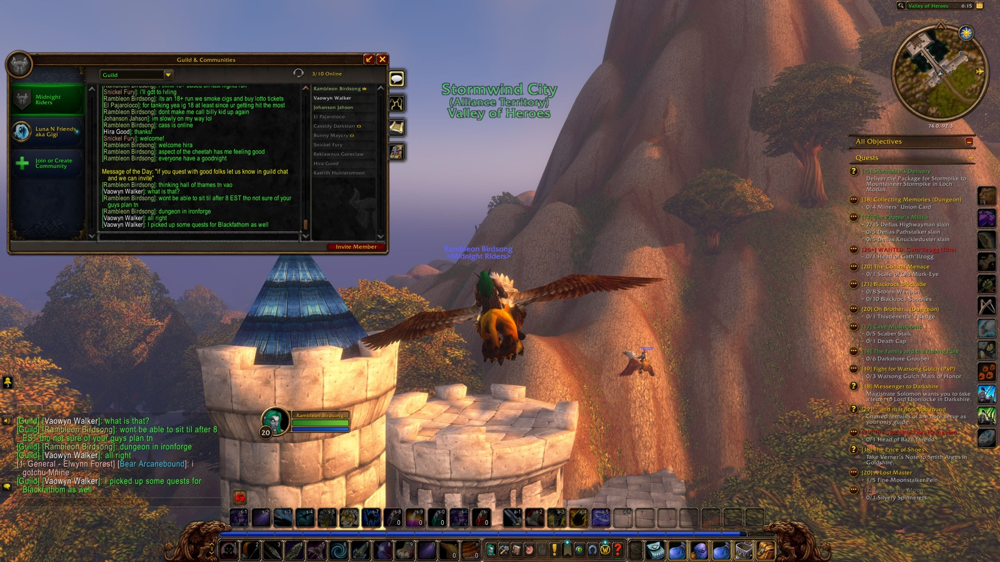
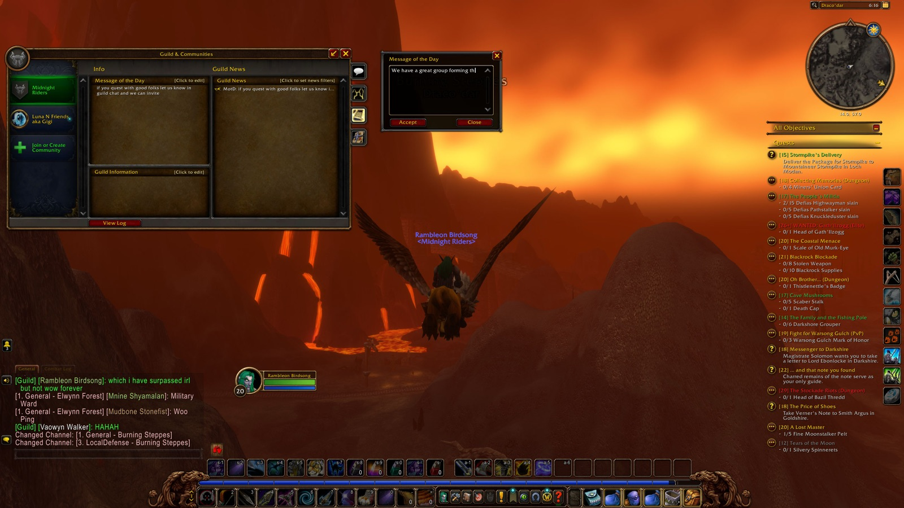
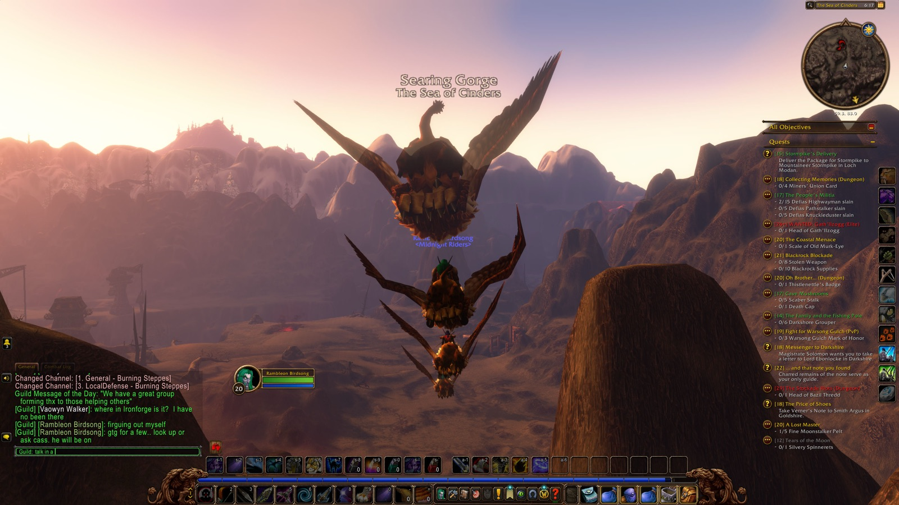
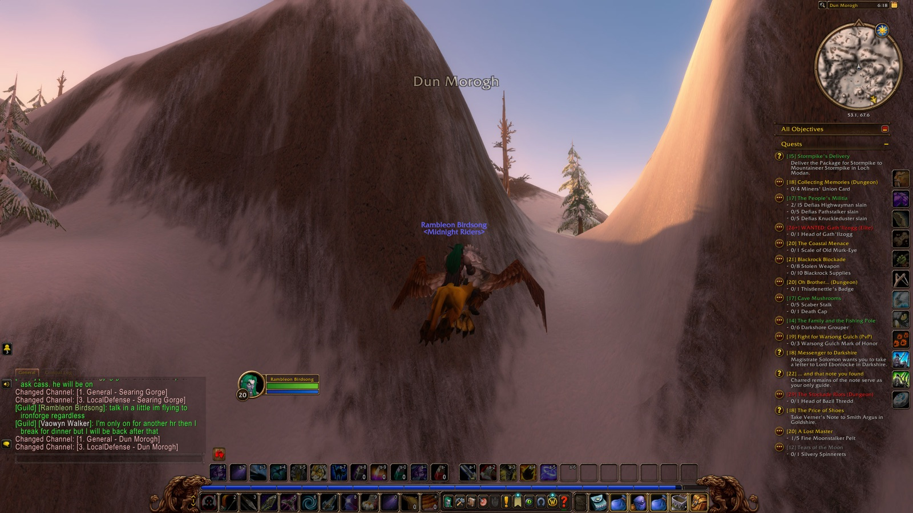
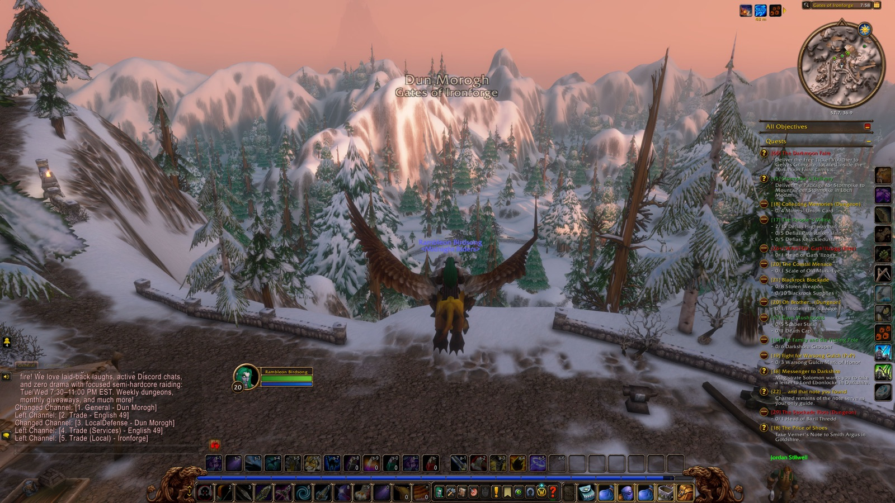
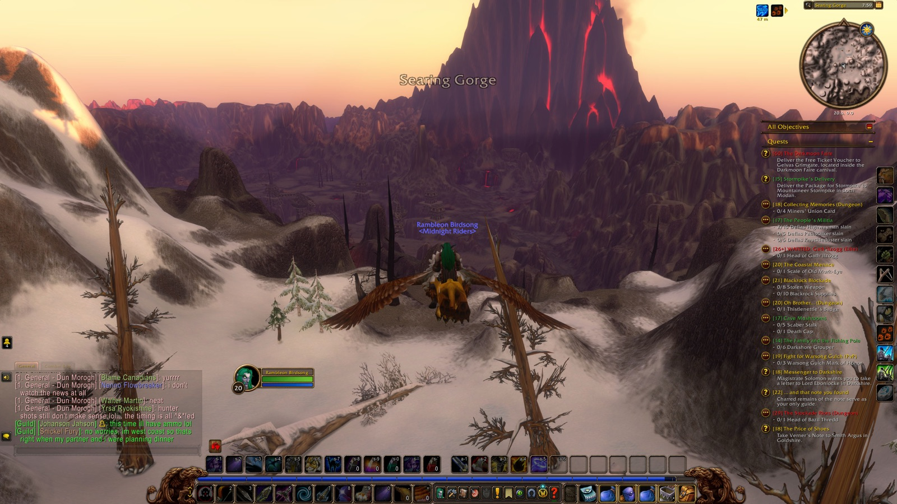
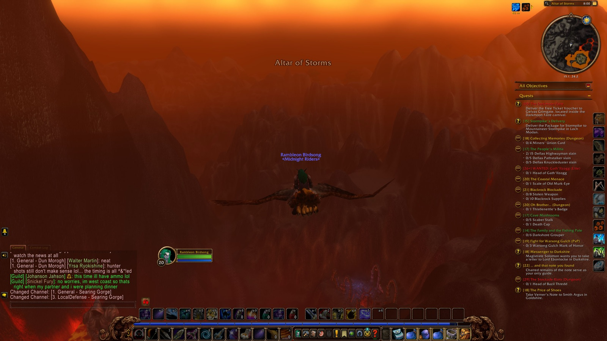
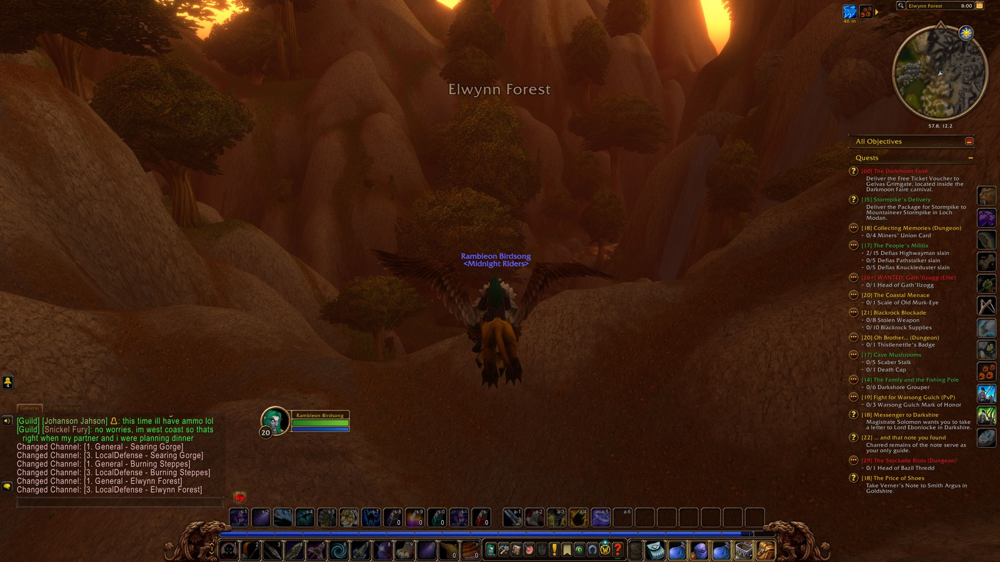
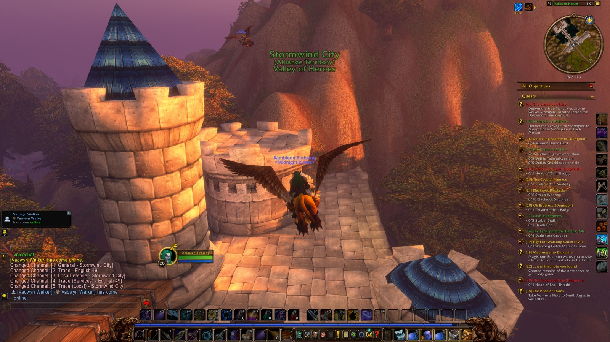

479 moments, in order · fold
- 3:38 PM — Began the adventure
- 3:38 PM — Entered Lakeshire (Redridge Mountains)
- 3:38 PM — 10/10 slain — "Assessing the Threat"
- 3:38 PM — Magistrate Solomon wants you to take a letter to Lord Ebonlocke in Darkshire. — "Messenger to Darkshire"
- 3:38 PM — Take Verner's Note to Smith Argus in Goldshire. — "The Price of Shoes"
- 3:38 PM — Deliver the Package for Stormpike to Mountaineer Stormpike in Loch Modan. — "Stormpike's Delivery"
- 3:38 PM — Entered Lake Everstill (Redridge Mountains)
- 3:41 PM — First Murloc Flesheater slain
- 3:42 PM — First Murloc Scout slain
- 3:50 PM — Slain by Murloc Flesheater in Lake Everstill
- 3:50 PM — Entered Redridge Mountains
- 3:50 PM — Entered Lake Everstill (Redridge Mountains)
- 3:52 PM — Back among the living
- 4:00 PM — 10/10 Spotted Sunfish — "Selling Fish"
- 4:04 PM — 8/8 Murloc Fin — "Murloc Poachers"
- 4:05 PM — 1/1 Oslow's Toolbox — "The Lost Tools"
- 4:06 PM — Entered Lakeshire (Redridge Mountains)
- 4:06 PM — Completed "The Lost Tools"
- 4:06 PM — Accepted "The Everstill Bridge"
- 4:07 PM — Completed "Selling Fish"
- 4:07 PM — Looted Dwarven Fishing Pole (Uncommon)
- 4:07 PM — Completed "Murloc Poachers"
- 4:07 PM — Entered Lake Everstill (Redridge Mountains)
- 4:08 PM — Entered Lakeshire (Redridge Mountains)
- 4:08 PM — Entered Lake Everstill (Redridge Mountains)
- 4:08 PM — Entered Lakeshire (Redridge Mountains)
- 6:11 PM — Entered Lakeshire (Redridge Mountains)
- 6:13 PM — Entered Lake Everstill (Redridge Mountains)
- 6:13 PM — Entered Redridge Mountains
- 6:13 PM — Flew from Redridge Mountains to Ironforge, Dun Morogh
- 6:14 PM — Entered Three Corners (Redridge Mountains)
- 6:14 PM — Entered Elwynn Forest

6:14 PM — Entered Elwynn Forest - 6:14 PM — Entered Ridgepoint Tower (Elwynn Forest)
- 6:14 PM — Entered Elwynn Forest
- 6:14 PM — Entered Eastvale Logging Camp (Elwynn Forest)
- 6:14 PM — Entered Elwynn Forest
- 6:14 PM — Entered Tower of Azora (Elwynn Forest)
- 6:15 PM — Entered Crystal Lake (Elwynn Forest)
- 6:15 PM — Entered Goldshire (Elwynn Forest)
- 6:15 PM — Entered Elwynn Forest
- 6:15 PM — Entered Valley of Heroes (Stormwind City)

6:15 PM — Entered Stormwind City - 6:15 PM — Entered Elwynn Forest
- 6:16 PM — Entered Crystal Lake (Elwynn Forest)
- 6:16 PM — Entered Northshire Vineyards (Elwynn Forest)
- 6:16 PM — Entered Northshire Valley (Elwynn Forest)
- 6:16 PM — Entered Elwynn Forest
- 6:16 PM — Entered Burning Steppes

6:16 PM — Entered Burning Steppes - 6:17 PM — Entered Draco'dar (Burning Steppes)
- 6:17 PM — Entered Blackrock Mountain (Burning Steppes)
- 6:17 PM — Entered Burning Steppes
- 6:17 PM — Entered Blackrock Stronghold (Burning Steppes)
- 6:17 PM — Entered Burning Steppes
- 6:17 PM — Entered The Sea of Cinders (Searing Gorge)

6:17 PM — Entered Searing Gorge - 6:18 PM — Entered The Cauldron (Searing Gorge)
- 6:18 PM — Entered Searing Gorge
- 6:18 PM — Entered Firewatch Ridge (Searing Gorge)
- 6:18 PM — Entered Searing Gorge
- 6:18 PM — Entered Dun Morogh

6:18 PM — Entered Dun Morogh - 6:18 PM — Entered The Tundrid Hills (Dun Morogh)
- 6:18 PM — Entered Dun Morogh
- 6:19 PM — Entered Kharanos (Dun Morogh)
- 6:19 PM — Entered Dun Morogh
- 6:19 PM — Entered Gates of Ironforge (Dun Morogh)
- 6:19 PM — Entered Ironforge

6:19 PM — Entered Ironforge - 6:19 PM — Entered The Great Forge (Ironforge)
- 6:40 PM — Entered The Military Ward (Ironforge)
- 6:40 PM — Entered Ironforge
- 6:41 PM — Accepted "The Darkmoon Faire"
- 6:41 PM — Deliver the Free Ticket Voucher to Gelvas Grimgate, located inside the Darkmoon Faire carnival. — "The Darkmoon Faire"
- 6:41 PM — Entered Gates of Ironforge (Dun Morogh)
- 6:41 PM — Discovered Gates of Ironforge
- 6:41 PM — Discovered Gates of Ironforge
- 6:42 PM — Discovered Dun Morogh
- 6:42 PM — Entered Dun Morogh
- 6:42 PM — Entered Gates of Ironforge (Dun Morogh)
- 6:43 PM — Entered Ironforge
- 6:43 PM — Entered The Great Forge (Ironforge)
- 6:44 PM — Entered Ironforge
- 6:45 PM — Entered Vault of Ironforge (Ironforge)
- 6:45 PM — Entered Ironforge
- 6:45 PM — Entered The Great Forge (Ironforge)
- 6:49 PM — Entered The High Seat (Ironforge)
- 7:54 PM — Entered The High Seat (Ironforge)
- 7:55 PM — Entered The Great Forge (Ironforge)
- 7:58 PM — Flew from The Great Forge to Lakeshire, Redridge
- 7:58 PM — Entered Ironforge
- 7:58 PM — Entered Gates of Ironforge (Dun Morogh)

7:58 PM — Entered Dun Morogh - 7:58 PM — Entered Dun Morogh
- 7:59 PM — Entered Steelgrill's Depot (Dun Morogh)
- 7:59 PM — Entered Dun Morogh
- 7:59 PM — Entered Kharanos (Dun Morogh)
- 7:59 PM — Entered Dun Morogh
- 7:59 PM — Entered Searing Gorge

7:59 PM — Entered Searing Gorge - 7:59 PM — Entered Firewatch Ridge (Searing Gorge)
- 7:59 PM — Entered Searing Gorge
- 8:00 PM — Entered Blackchar Cave (Searing Gorge)
- 8:00 PM — Entered Searing Gorge
- 8:00 PM — Entered Altar of Storms (Burning Steppes)

8:00 PM — Entered Burning Steppes - 8:00 PM — Entered Burning Steppes
- 8:00 PM — Entered Draco'dar (Burning Steppes)
- 8:00 PM — Entered Burning Steppes
- 8:00 PM — Entered Elwynn Forest

8:00 PM — Entered Elwynn Forest - 8:01 PM — Entered Northshire Valley (Elwynn Forest)
- 8:01 PM — Entered Elwynn Forest
- 8:01 PM — Entered Valley of Heroes (Stormwind City)

8:01 PM — Entered Stormwind City - 8:01 PM — Entered Elwynn Forest
- 8:02 PM — Entered Goldshire (Elwynn Forest)
- 8:02 PM — Entered Elwynn Forest
- 8:03 PM — Entered Three Corners (Redridge Mountains)

8:03 PM — Entered Redridge Mountains - 8:03 PM — Entered Redridge Mountains
- 8:04 PM — Entered Lakeridge Highway (Redridge Mountains)
- 8:05 PM — First Redridge Poacher slain
- 8:05 PM — First Redridge Mongrel slain
- 8:08 PM — 6/6 Redridge Poacher slain — "Assessing the Threat"
- 8:09 PM — First Redridge Thrasher slain
- 8:10 PM — Entered Redridge Mountains
- 8:11 PM — Joined forces with Cassidy (Druid)
- 8:12 PM — Joined forces with Vaowyn (Priest)
- 8:12 PM — Joined forces with Johanson (Hunter)
- 8:12 PM — Joined forces with Snickel (Warrior)
- 8:12 PM — Completed "Assessing the Threat"
- 8:12 PM — Reached Level 21
- 8:12 PM — Flew from Redridge Mountains to Ironforge, Dun Morogh
- 8:12 PM — Entered Three Corners (Redridge Mountains)
- 8:12 PM — Entered Elwynn Forest
- 8:12 PM — Entered Ridgepoint Tower (Elwynn Forest)
- 8:12 PM — Entered Elwynn Forest
- 8:13 PM — Entered Eastvale Logging Camp (Elwynn Forest)
- 8:13 PM — Entered Elwynn Forest
- 8:13 PM — Entered Tower of Azora (Elwynn Forest)
- 8:13 PM — Entered Crystal Lake (Elwynn Forest)
- 8:13 PM — Entered Goldshire (Elwynn Forest)
- 8:13 PM — Entered Elwynn Forest
- 8:14 PM — Entered Valley of Heroes (Stormwind City)
- 8:14 PM — Entered Elwynn Forest
- 8:14 PM — Entered Crystal Lake (Elwynn Forest)
- 8:14 PM — Entered Northshire Vineyards (Elwynn Forest)
- 8:14 PM — Entered Northshire Valley (Elwynn Forest)
- 8:14 PM — Entered Elwynn Forest
- 8:15 PM — Entered Burning Steppes
- 8:15 PM — Entered Draco'dar (Burning Steppes)
- 8:15 PM — Entered Blackrock Mountain (Burning Steppes)
- 8:15 PM — Entered Burning Steppes
- 8:15 PM — Entered Blackrock Stronghold (Burning Steppes)
- 8:15 PM — Entered Burning Steppes
- 8:16 PM — Entered The Sea of Cinders (Searing Gorge)
- 8:16 PM — Entered The Cauldron (Searing Gorge)
- 8:16 PM — Entered Searing Gorge
- 8:16 PM — Entered Firewatch Ridge (Searing Gorge)
- 8:16 PM — Entered Searing Gorge
- 8:17 PM — Entered Dun Morogh
- 8:17 PM — Entered The Tundrid Hills (Dun Morogh)
- 8:17 PM — Entered Dun Morogh
- 8:17 PM — Entered Kharanos (Dun Morogh)
- 8:17 PM — Entered Dun Morogh
- 8:17 PM — Entered Gates of Ironforge (Dun Morogh)
- 8:17 PM — Entered Ironforge
- 8:18 PM — Entered The Great Forge (Ironforge)
- 8:19 PM — Entered The High Seat (Ironforge)
- 8:19 PM — Entered The Great Forge (Ironforge)
- 8:20 PM — Entered Ironforge
- 8:21 PM — Entered Hall of Explorers (Ironforge)
- 8:21 PM — Entered The Forlorn Cavern (Ironforge)
- 8:21 PM — Accepted "Knowledge in the Deeps"
- 8:22 PM — Entered The Mystic Ward (Ironforge)
- 8:23 PM — Entered Ironforge
- 8:24 PM — Entered The Great Forge (Ironforge)
- 8:25 PM — Entered The High Seat (Ironforge)
- 8:25 PM — Entered The Great Forge (Ironforge)
- 8:25 PM — Entered The High Seat (Ironforge)
- 8:29 PM — Entered Ironforge
- 8:29 PM — Accepted "The Restless Dead"
- 8:29 PM — Died in Ironforge
- 8:29 PM — Entered Gates of Ironforge (Dun Morogh)
- 8:30 PM — Entered Ironforge
- 8:30 PM — Entered The Great Forge (Ironforge)
- 8:30 PM — Entered The High Seat (Ironforge)
- 8:31 PM — Entered Ironforge
- 8:32 PM — Back among the living
- 8:33 PM — Accepted "Important Heirlooms"
- 8:34 PM — Entered The Hall of Thanes
- 8:34 PM — Entered The Hall of Thanes

8:34 PM — Entered The Hall of Thanes - 8:37 PM — Abandoned "The Family and the Fishing Pole"
- 8:37 PM — Abandoned "Tears of the Moon"
- 8:38 PM — Abandoned "Fishin' Time"
- 8:38 PM — Accepted "An Ancient Grudge"
- 8:38 PM — Entered Anvilmar's Rest (The Hall of Thanes)
- 8:38 PM — 10/10 Tormented Soul slain — "The Restless Dead"
- 8:39 PM — Defeated Faldrim Anvilmar
- 8:39 PM — First Faldrim Anvilmar slain
- 8:39 PM — 1/1 Faldrim Anvilmar slain — "An Ancient Grudge"
- 8:41 PM — 15/15 Enraged Apparition slain — "The Restless Dead"
- 8:42 PM — Entered The Hall of Thanes
- 8:42 PM — Looted Deepgrave Trousers (Uncommon)
- 8:42 PM — Completed "An Ancient Grudge"
- 8:42 PM — Entered Anvilmar's Rest (The Hall of Thanes)
- 8:43 PM — Entered The Hall of Thanes
- 8:43 PM — First Bloodhound Runt slain
- 8:43 PM — First Dark Iron Looter slain
- 8:44 PM — Looted Nomad Trousers of Agility (Uncommon)
- 8:48 PM — First Dark Iron Engineer slain
- 8:49 PM — Entered Dark Iron Ingress (The Hall of Thanes)
- 8:49 PM — First Dark Iron Summoner slain
- 8:51 PM — Defeated Infurnus
- 8:51 PM — First Magmatus slain
- 8:51 PM — First Fiery Assistant slain
- 8:54 PM — Entered The Hall of Thanes
- 8:56 PM — Defeated Plunder
- 8:56 PM — First Plunder slain
- 8:57 PM — First Lesser Stone Golem slain
- 9:00 PM — Defeated Durgen Dirgehammer
- 9:00 PM — First Durgen Dirgehammer slain
- 9:00 PM — Entered Reliquary of Kings (The Hall of Thanes)
- 9:02 PM — Accepted "The Treaty of Understanding"
- 9:02 PM — Deliver the Treaty of Understanding to Magni Bronzebeard in Ironforge. — "The Treaty of Understanding"
- 9:03 PM — 8/8 Dwarven Heirloom — "Important Heirlooms"
- 9:03 PM — Entered The Hall of Thanes
- 9:04 PM — Entered Dark Iron Ingress (The Hall of Thanes)
- 9:04 PM — Entered The Hall of Thanes
- 9:05 PM — Entered Anvilmar's Rest (The Hall of Thanes)
- 9:05 PM — Entered The Hall of Thanes
- 9:06 PM — Left The Hall of Thanes
- 9:06 PM — Entered Ironforge
- 9:06 PM — Completed "Important Heirlooms"
- 9:06 PM — Looted Dwarven Tome (Uncommon)
- 9:08 PM — Completed "The Restless Dead"
- 9:08 PM — Looted Dusty Belt (Uncommon)
- 9:08 PM — Entered The High Seat (Ironforge)
- 9:09 PM — Completed "The Treaty of Understanding"
- 9:09 PM — Entered The Great Forge (Ironforge)
- 9:11 PM — Entered Ironforge
- 9:11 PM — Entered Vault of Ironforge (Ironforge)
- 9:13 PM — Entered Ironforge
- 9:13 PM — Entered The Great Forge (Ironforge)
- 9:14 PM — Parted ways with Johanson
- 9:16 PM — Flew from The Great Forge to Lakeshire, Redridge
- 9:16 PM — Entered Ironforge
- 9:16 PM — Entered Gates of Ironforge (Dun Morogh)
- 9:16 PM — Entered Dun Morogh
- 9:16 PM — Entered Steelgrill's Depot (Dun Morogh)
- 9:16 PM — Entered Dun Morogh
- 9:16 PM — Entered Kharanos (Dun Morogh)
- 9:16 PM — Entered Dun Morogh
- 9:17 PM — Entered Searing Gorge
- 9:17 PM — Parted ways with Vaowyn
- 9:17 PM — Entered Firewatch Ridge (Searing Gorge)
- 9:17 PM — Entered Searing Gorge
- 9:17 PM — Entered Blackchar Cave (Searing Gorge)
- 9:17 PM — Entered Searing Gorge
- 9:17 PM — Entered Altar of Storms (Burning Steppes)
- 9:18 PM — Entered Burning Steppes
- 9:18 PM — Entered Draco'dar (Burning Steppes)
- 9:18 PM — Entered Burning Steppes
- 9:18 PM — Entered Elwynn Forest
- 9:18 PM — Entered Northshire Valley (Elwynn Forest)
- 9:19 PM — Entered Elwynn Forest
- 9:19 PM — Entered Valley of Heroes (Stormwind City)
- 9:19 PM — Entered Elwynn Forest
- 9:19 PM — Entered Goldshire (Elwynn Forest)
- 9:19 PM — Entered Elwynn Forest
- 9:20 PM — Entered Three Corners (Redridge Mountains)
- 9:21 PM — Entered Redridge Mountains
- 9:25 PM — Entered Lake Everstill (Redridge Mountains)
- 9:25 PM — Entered Lakeshire (Redridge Mountains)
- 9:26 PM — Parted ways with Snickel
- 9:27 PM — Entered Redridge Mountains
- 9:27 PM — Entered Redridge Canyons (Redridge Mountains)
- 9:28 PM — First Redridge Mystic slain
- 9:28 PM — First Redridge Brute slain
- 9:31 PM — Joined forces with Magus (Mage)
- 9:32 PM — 5/5 Iron Rivet — "The Everstill Bridge"
- 9:32 PM — Joined forces with Avanta (Shaman)
- 9:33 PM — Parted ways with Magus
- 9:34 PM — 5/5 Iron Pike — "The Everstill Bridge"
- 9:35 PM — Entered Redridge Mountains
- 9:35 PM — Entered Redridge Canyons (Redridge Mountains)
- 9:35 PM — Entered Redridge Mountains
- 9:35 PM — Parted ways with Avanta
- 9:36 PM — Entered Lakeshire (Redridge Mountains)
- 9:36 PM — Completed "The Everstill Bridge"
- 9:36 PM — Looted Smith's Trousers (Uncommon)
- 9:37 PM — Accepted "Alther's Mill"
- 9:37 PM — Entered Lake Everstill (Redridge Mountains)
- 9:38 PM — Entered Lakeshire (Redridge Mountains)
- 9:38 PM — Entered Lake Everstill (Redridge Mountains)
- 9:39 PM — 1/1 Hilary's Necklace — "Hilary's Necklace"
- 9:39 PM — Entered Lakeshire (Redridge Mountains)
- 9:39 PM — Entered Lake Everstill (Redridge Mountains)
- 9:39 PM — Completed "Hilary's Necklace"
- 9:39 PM — Entered Lakeshire (Redridge Mountains)
- 9:40 PM — Entered Lake Everstill (Redridge Mountains)
- 9:40 PM — Entered Redridge Mountains
- 9:40 PM — Entered Lakeridge Highway (Redridge Mountains)
- 9:41 PM — First Black Dragon Whelp slain
- 9:41 PM — First Great Goretusk slain
- 9:42 PM — Entered Redridge Mountains
- 9:43 PM — First Murloc Minor Tidecaller slain
- 9:45 PM — Entered Lakeridge Highway (Redridge Mountains)
- 9:47 PM — Entered Redridge Mountains
- 9:47 PM — Entered Lake Everstill (Redridge Mountains)
- 9:47 PM — Entered Lakeshire (Redridge Mountains)
- 9:47 PM — Entered Redridge Mountains
- 9:48 PM — First Blackrock Grunt slain
- 9:49 PM — Entered Alther's Mill (Redridge Mountains)
- 9:49 PM — First Dire Condor slain
- 9:50 PM — First Greater Tarantula slain
- 9:54 PM — 12/12 Greater Tarantula slain — "Alther's Mill"
- 9:57 PM — 6/6 Tarantula Egg destroyed — "Alther's Mill"
- 9:57 PM — Entered Redridge Mountains
- 9:58 PM — Entered Lakeshire (Redridge Mountains)
- 9:58 PM — Completed "Alther's Mill"
- 10:00 PM — Entered Redridge Mountains
- 10:00 PM — Entered Alther's Mill (Redridge Mountains)
- 10:01 PM — Discovered Stonewatch Tower
- 10:01 PM — Entered Stonewatch Tower (Redridge Mountains)
- 10:01 PM — Entered Stonewatch (Redridge Mountains)
- 10:01 PM — Discovered Stonewatch
- 10:01 PM — Discovered Stonewatch
- 10:02 PM — Discovered Galardell Valley
- 10:02 PM — Discovered Galardell Valley
- 10:02 PM — Entered Galardell Valley (Redridge Mountains)
- 10:03 PM — First Shadowhide Brute slain
- 10:04 PM — First Shadowhide Gnoll slain
- 10:05 PM — First Rabid Shadowhide Gnoll slain
- 10:06 PM — Looted Shadowhide Mace (Uncommon)
- 10:18 PM — First Shadowhide Warrior slain
- 10:20 PM — Slain by Rabid Shadowhide Gnoll in Galardell Valley
- 10:20 PM — Entered Redridge Mountains
- 10:20 PM — Entered Lake Everstill (Redridge Mountains)
- 10:21 PM — Entered Stonewatch (Redridge Mountains)
- 10:21 PM — Entered Stonewatch Tower (Redridge Mountains)
- 10:21 PM — Entered Stonewatch (Redridge Mountains)
- 10:22 PM — Entered Galardell Valley (Redridge Mountains)
- 10:22 PM — Back among the living
- 10:23 PM — First Shadowhide Assassin slain
- 10:25 PM — Joined forces with Whist (Priest)
- 10:26 PM — First Shadowhide Darkweaver slain
- 10:26 PM — First Lieutenant Fangore slain
- 10:26 PM — First Shadowhide Slayer slain
- 10:26 PM — 1/1 Fangore's Paw — "WANTED: Lieutenant Fangore"
- 10:32 PM — Discovered Tower of Ilgalar
- 10:32 PM — Discovered Tower of Ilgalar
- 10:32 PM — Entered Tower of Ilgalar (Redridge Mountains)
- 10:33 PM — Entered Galardell Valley (Redridge Mountains)
- 10:37 PM — Discovered Stonewatch Falls
- 10:37 PM — Discovered Stonewatch Falls
- 10:37 PM — Entered Stonewatch Falls (Redridge Mountains)
- 10:41 PM — Entered Galardell Valley (Redridge Mountains)
- 10:42 PM — Entered Stonewatch Falls (Redridge Mountains)
- 10:45 PM — Entered Galardell Valley (Redridge Mountains)
- 10:45 PM — Reached Level 22

10:45 PM — Reached Level 22 in Galardell Valley - 10:46 PM — Entered Stonewatch Falls (Redridge Mountains)
- 10:46 PM — 10/10 Shadowhide Pendant — "Solomon's Law"
- 10:47 PM — Entered Galardell Valley (Redridge Mountains)
- 10:48 PM — Entered Stonewatch Falls (Redridge Mountains)
- 10:49 PM — Entered Galardell Valley (Redridge Mountains)
- 10:49 PM — Entered Tower of Ilgalar (Redridge Mountains)
- 10:49 PM — Entered Galardell Valley (Redridge Mountains)
- 10:50 PM — Hearthed home to Lakeshire
- 10:50 PM — Entered Lakeshire (Redridge Mountains)
- 10:50 PM — Parted ways with Whist
- 10:50 PM — Accepted "What Comes Around..."
- 10:51 PM — Completed "Solomon's Law"
- 10:51 PM — Completed "WANTED: Lieutenant Fangore"
- 11:00 PM — Entered Redridge Mountains
- 11:01 PM — Entered Alther's Mill (Redridge Mountains)
- 11:02 PM — Entered Stonewatch Tower (Redridge Mountains)
- 11:02 PM — Joined forces with Thaddeus (Paladin)
- 11:03 PM — Entered Stonewatch (Redridge Mountains)
- 11:04 PM — First Blackrock Sentry (elite) slain
- 11:05 PM — Joined forces with Benny (Priest)
- 11:05 PM — First Blackrock Shadowcaster (elite) slain
- 11:05 PM — Joined forces with Jirallis (Warlock)
- 11:06 PM — First Blackrock Scout (elite) slain
- 11:06 PM — Entered Stonewatch Tower (Redridge Mountains)
- 11:06 PM — Entered Stonewatch (Redridge Mountains)
- 11:09 PM — Looted Defender Girdle of Defense (Uncommon)
- 11:11 PM — First Blackrock Hunter (elite) slain
- 11:12 PM — 10/10 Battleworn Axe — "Blackrock Menace"
- 11:12 PM — Entered Stonewatch Keep (Redridge Mountains)
- 11:12 PM — Discovered Stonewatch Keep
- 11:14 PM — Overheard in Stonewatch Keep: Luw Foxmoon and Calii Coda (3 lines)
- 11:15 PM — Slain by Blackrock Sentry (elite) in Stonewatch Keep
- 11:15 PM — Entered Redridge Mountains
- 11:15 PM — Entered Lake Everstill (Redridge Mountains)
- 11:17 PM — Entered Redridge Mountains
- 11:17 PM — Entered Lake Everstill (Redridge Mountains)
- 11:17 PM — Entered Alther's Mill (Redridge Mountains)
- 11:17 PM — Entered Stonewatch Tower (Redridge Mountains)
- 11:18 PM — Entered Stonewatch (Redridge Mountains)
- 11:18 PM — Back among the living
- 11:19 PM — First Blackrock Gladiator (elite) slain
- 11:20 PM — Looted Short Ash Bow (Uncommon)
- 11:20 PM — Entered Stonewatch Keep (Redridge Mountains)
- 11:20 PM — Entered Stonewatch (Redridge Mountains)
- 11:21 PM — Entered Stonewatch Keep (Redridge Mountains)
- 11:22 PM — Overheard in Stonewatch Keep: Steel Stormblessed and Thorbooze Greatbeard (5 lines)
- 11:26 PM — Parted ways with Thaddeus
- 11:27 PM — Slain by Gath'Ilzogg (elite) in Stonewatch Keep
- 11:27 PM — Entered Redridge Mountains
- 11:27 PM — Entered Lake Everstill (Redridge Mountains)
- 11:28 PM — Entered Lakeridge Highway (Redridge Mountains)
- 11:28 PM — Entered Redridge Mountains
- 11:29 PM — Entered Stonewatch (Redridge Mountains)
- 11:29 PM — Entered Stonewatch Keep (Redridge Mountains)
- 11:29 PM — Entered Stonewatch (Redridge Mountains)
- 11:30 PM — Back among the living
- 11:30 PM — Slain by Blackrock Sentry (elite) in Stonewatch
- 11:30 PM — Entered Redridge Mountains
- 11:30 PM — Back among the living
- 11:31 PM — Entered Lake Everstill (Redridge Mountains)
- 11:31 PM — Parted ways with Benny
- 11:31 PM — Entered Lakeshire (Redridge Mountains)
- 11:31 PM — Completed "Blackrock Menace"
- 11:31 PM — Entered Lake Everstill (Redridge Mountains)
- 11:32 PM — Entered Redridge Mountains
- 11:32 PM — Parted ways with Jirallis
- 11:32 PM — Entered Three Corners (Redridge Mountains)
- 11:34 PM — First Tarantula slain
- 11:34 PM — Entered Elwynn Forest
- 11:40 PM — Abandoned "Thunderbrew"
- 11:40 PM — Entered Goldshire (Elwynn Forest)
- 11:40 PM — Completed "The Darkmoon Faire"
- 11:41 PM — Completed "The Price of Shoes"
- 11:41 PM — Accepted "Return to Verner"
- 11:41 PM — Return to Verner Osgood in Redridge. Give him the Crate of Horseshoes. — "Return to Verner"
- 11:41 PM — Learned |cff71d5ff|Hspell:14274:0|h[Distracting Shot (Rank 2)]|h|r
- 11:41 PM — Learned Distracting Shot
- 11:41 PM — Learned Hunter's Mark
- 11:41 PM — Learned Scorpid Sting
- 11:44 PM — Entered Elwynn Forest
- 11:45 PM — Discovered Northshire Valley
- 11:45 PM — Entered Northshire Valley (Elwynn Forest)
- 11:45 PM — Entered Main Hall (Elwynn Forest)
- 11:45 PM — Entered Library Wing (Elwynn Forest)
- 11:45 PM — Completed "Brother Paxton"
- 11:46 PM — Accepted "Ink Supplies"
- 11:46 PM — Entered Main Hall (Elwynn Forest)
- 11:46 PM — Entered Northshire Valley (Elwynn Forest)
- 11:46 PM — Entered Main Hall (Elwynn Forest)
- 11:46 PM — Entered Hall of Arms (Elwynn Forest)
- 11:46 PM — Entered Main Hall (Elwynn Forest)
- 11:46 PM — Entered Northshire Valley (Elwynn Forest)
- 11:47 PM — Entered Elwynn Forest
- 11:47 PM — Parted ways with Cassidy
- 11:47 PM — Abandoned "Dry Times"
- 11:47 PM — Entered Goldshire (Elwynn Forest)
- 11:48 PM — Entered Elwynn Forest
- 11:48 PM — Entered Valley of Heroes (Stormwind City)
- 11:49 PM — Entered Trade District (Stormwind City)
- 11:50 PM — Flew from Trade District to Lakeshire, Redridge
- 11:50 PM — Entered Valley of Heroes (Stormwind City)
- 11:51 PM — Entered Elwynn Forest
- 11:51 PM — Entered Goldshire (Elwynn Forest)
- 11:51 PM — Entered Elwynn Forest
- 11:52 PM — Entered Three Corners (Redridge Mountains)
- 11:52 PM — Entered Redridge Mountains
- 11:53 PM — Entered Lake Everstill (Redridge Mountains)
- 11:53 PM — Entered Lakeshire (Redridge Mountains)
- 11:53 PM — Completed "Ink Supplies"
- 11:53 PM — Accepted "Rethban Ore"
- 11:53 PM — Completed "Return to Verner"
- 11:53 PM — Accepted "A Baying of Gnolls"
- 11:53 PM — Accepted "Underbelly Scales"